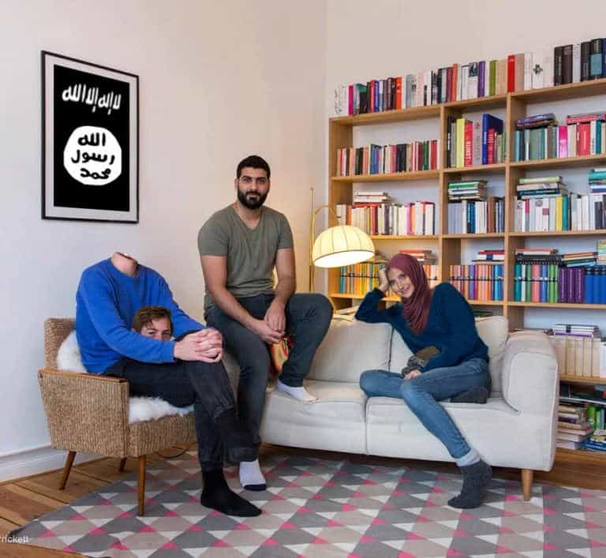

Daryush "Roosh" Valizadeh created ROK in October 2012. You can visit his blog at RooshV.com or follow him on Twitter and Facebook.


A girl recently told me that she hopes her female dog would breed. Otherwise, the dog may have a false pregnancy where she pretends she is pregnant and shows increasingly unstable behavior. This was the first time I learned about the scientific condition in dogs called pseudopregnancy. I was immediately struck by how similar it is to the behavior of adult human women who don’t have babies, especially ones who live in the affluent West. After studying this condition extensively, I speculate that women who don’t fulfill their biological program of having children exhibit the disturbing signs of false pregnancy by becoming insane.
The symptoms of false pregnancy stem from hormonal changes. The female dog, which I will refer to as the “bitch” from this point on, experiences enlarged mammary glands and may secrete milk. Her abdominum swells, she gains weight, the vagina discharges a fluid, and there may be nausea and vomiting. The bitch may even exhibit cravings for certain foods alongside increased appetite.
Emotional changes are soon to follow. The bitch shows overt emotional attachment and even defensiveness for abstract objects like toys or clothing. Her nesting instinct causes her to hoard random objects like tennis balls, and she will often appear confused or disoriented. Other symptoms include aggression, depression, restlessness, and anxiety.
When I read the symptoms of canine false pregnancy, I realized that the majority of childless women over the age of 25 exhibit the exact same symptoms. The most obvious symptom that we can visually observe is weight gain. It is hard, if not impossible, to find a female past her fertile prime that is of normal weight. Next, the human female shows emotional attachment to objects that are outside of her personal domain of home and family, specifically minorities and Islamic migrants. A childless woman collects animals and third world migrants like a bitch collects tennis balls, as if she is their mother trying to protect them from danger, but of course poor brown people are not her children, and may view her as stupid.

The barren human female also displays aggression against those who threaten her “children.” If you try to take away a tennis ball of a bitch who has false pregnancy, she will attack you. The same happens if you try to “take away” the brown migrants that a human female has coveted. She will be vicious in calling you racist, fascist, literally Hitler, and whatever bad man of history that she happens to remember from her history classes in high school.
Understand that aggression is the most dominant trait of the false pregnancy, because the bitch actually believes that someone is trying to kill her “offspring.” In human females, you see displays so full of anger and violence that even include calls for an uprising that overthrows or kills a democratically elected president. The nurturing instinct, which is useful in women who have children, goes horribly wrong in women who fail to have children.
If a woman doesn’t hoard brown migrants, she will procure a cat or dog and pretend that the animal is a human child. It is now common to see women dress up their pets as if they’re actual humans and talk to them using a baby voice. The motherly instinct becomes hijacked by these furry animals.
The other symptoms of false pregnancy, such as depression, restlessness, and anxiety, seem to perfectly describe childless Western females, who are so mentally ill that at least 25% of them need to be medicated with pharmaceutical drugs. The combination of their sterility and the extreme enabling of their behavior in Western culture has created a perfect storm that is leading to societal mass hysteria.
It turns out that false pregnancy is common in the mammalian world, occurring not only in dogs but also cats, mice, swine, and yes, humans. In human cases, the woman has to think she is falsely pregnant to be diagnosed with the disorder, but I believe that a woman experiences the same symptoms without actually thinking she is pregnant. When reading the scientific literature on female dogs, I had to remind myself that it wasn’t about human females—that’s how similar the clinical presentation of the symptoms are.
If you know a woman who is showing signs of false pregnancy, I recommend you do an intervention to remind her that she is not pregnant, brown migrants are not her children, and Donald Trump is not a threat to her pug. Unfortunately, there is no cure unless she actually becomes pregnant, but that would require her to emotionally bond with another human being and sacrifice for its needs in a way that goes beyond superficial virtue signalling. That may be asking for the impossible, but unless women start having babies, I expect them to continue descending into greater levels of madness.
This article was originally published on Roosh V.
Read Next: The Future Mother Of Your Child Should Be A Virgin Who Believes In God